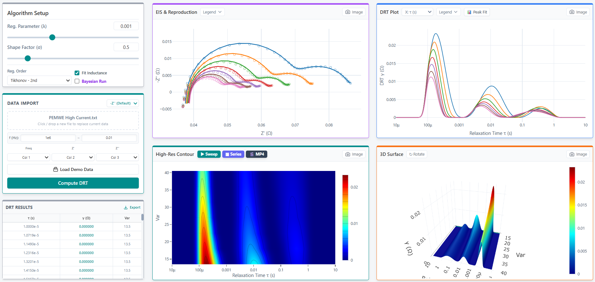
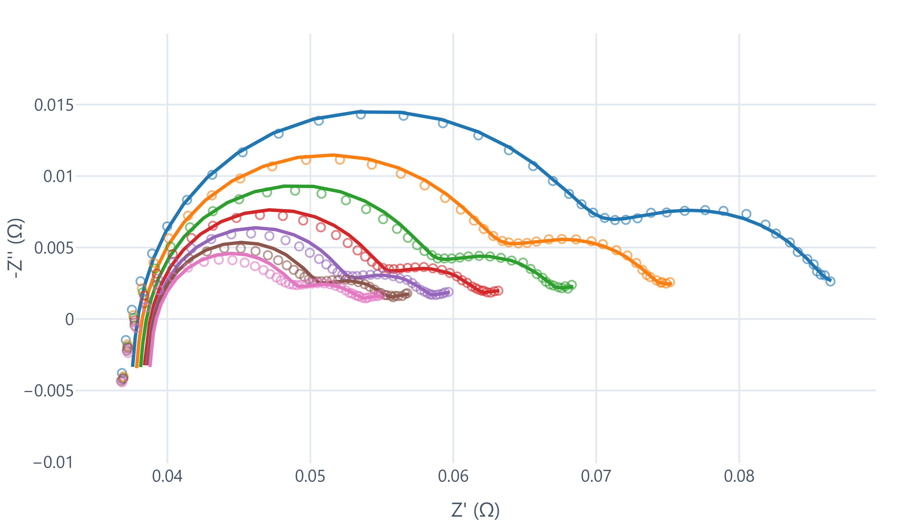
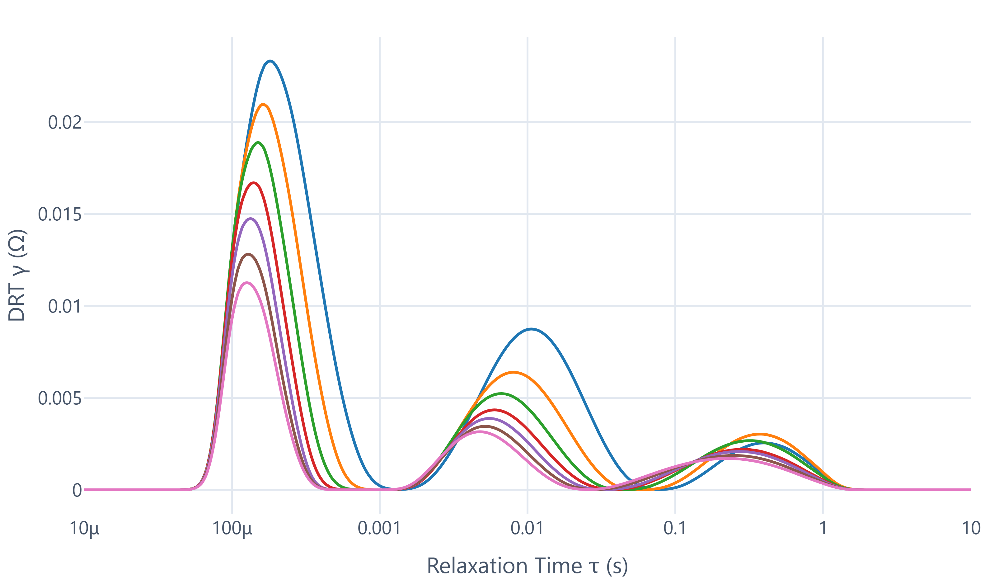
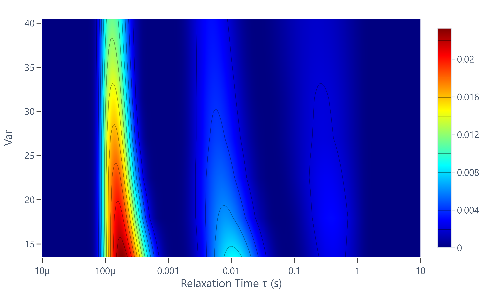

Lightweight DRT analysis, built for real electrochemical work.
DRT Go is a focused software tool for electrochemical impedance spectroscopy, designed for universities, research institutes, and industrial R&D teams. It combines reference-level analytical rigor with a practical workflow for batch analysis, visualization, and export.

Focused software, not a bloated platform.
DRT Go is intentionally compact. It is designed to make high-quality DRT analysis accessible without requiring scripting environments or complex workflows, while keeping the visual and export experience strong enough for real project use.
Rigorous DRT workflow
Supports established regularization strategies and practical settings for electrochemical impedance interpretation across research scenarios.
Batch and remote processing
Built to handle repeated datasets efficiently, including automated remote workflows and improved compatibility with incoming data formats.
Publication-ready visuals
Export image sequences and MP4 animations with synchronized Var and profile context, giving a clear view of how DRT evolves across a series.
See DRT evolution in motion.
Sweep preview and MP4 export allow intuitive understanding of electrochemical process evolution.
From impedance to interpretation.
DRT Go combines direct electrochemical insight with practical visualization, from raw EIS reproduction to DRT plots and contour evolution.

Comparison between measured and reconstructed impedance.

Distribution of relaxation times across datasets.

Evolution of DRT features across experimental conditions.
Simple from import to presentation.
Import EIS data
Support common text-based files and define Var manually when needed.
Compute DRT
Use a focused interface for parameter setup, visualization, and comparison.
Preview evolution
Inspect changing DRT behavior through sweep playback and profile-linked context.
Export for communication
Generate static images, image series, or MP4 videos for talks, reports, and internal sharing.
Flexible pricing for research and industry
DRT Go is designed for both academic and industrial users, with pricing tailored to different application scenarios. Please contact for details and trial access.
- Permanent license
- Free updates within the current development roadmap
- Direct communication for pre-sales and technical discussion
- Suitable for universities, research institutes, and industrial R&D
Contact & trial
For trial access, quotations, purchasing workflow, or lecture collaboration, please contact directly. This is currently the fastest path for serious users.
Target users
DRT Go is intended for electrochemical researchers and R&D engineers working in batteries, fuel cells, electrolysis, corrosion, and related fields where impedance data must be interpreted clearly and communicated efficiently.
Lectures & technical communication
The software can also be introduced through lectures, internal seminars, and application-oriented discussions. For institutions interested in a focused EIS–DRT session, please get in touch directly.